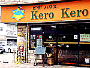
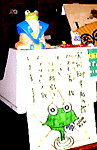
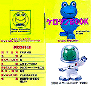
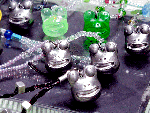
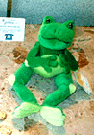

カエラー専用ピザハウス？『kero kero』熊本に出現！ 【熊本発=のんたん同志記者】熊本のカエルなピザハウスをご紹介します。場所は熊本県立大学通り、名前は「kero kero」。カエラーにはもってこいのピザハウス（喫茶店？）ではないでしょうかッ。お店の名前の由来は、この店のママの愛称とのこと・・・残念ながらカエルなママは不在でしたが、とても温和なお店の方が快くこの画像を撮らせてくれました。
 店内は広く、レジ近くにカエルの置物がたくさんありました。メニューはピザの他にパスタやオムライス、ピラフ、コーヒー、ケーキなどなど。私はミックスピザをテイクアウトしたのですが、箱を開けると、内側にカエルのスタンプと「kero kero」の文字が！！！うぅぅぅ、憎い演出です〜〜〜。肝心のお味も、パリッと薄い生地に手作りのトマトソースと本格ナチュラルチーズで大満足でした！「ピザハウス ｋｅｒｏ ｋｅｒｏ」熊本市月出2-6-22 電話 096(382)2073
奉賛会推薦ピザハウスと認定【全国かえる奉賛会】素晴らしいピザハウスである。全国かえる奉賛会推薦ピザハウスと認定するので、さっそくお店に連絡してくれーっ！なお、この号を印刷して『かえる新聞平成１１年９月２７日号で紹介されました！』と、お店に貼り出してもいいぞおおっ！ケロタンの性格は若年寄り！ 【東京発=Shigeko同志記者】ちょっと前に友達からもらったケロタンのせっけん置きにケロタンBOOKなるものがついてまして、ケロタンのプロフィールが掲載されてたんです。（プロフィール以外のページは普通のカタログだったのでお付けしませんが）３ｃｍ四方くらいの小さな小さな本でした。トロイマーのHPに行ってもそんな情報はなかったことも確認済みです。
PROFILE
話す言葉 ＊ ケロタン語
性別 ＊ ♂
住んでいる世界 ＊ 森
年齢 ＊ 人間でいうと５才
好きなもの（事） ＊ チョコレート・ハーモニカ
趣味・特技 ＊ 釣り
嫌いなもの（事） ＊ いじわるなミミズ
性格 ＊ 世話好き・若年寄り・優しい
 モロー携帯ストラップのラインナップ決まる！発売間近！【福岡発=モロー父サポーター・走るかえる同志記者】お待たせしました。ついに待望のモローストラップが１０月１日に発売予定です！！みなさん、初のモバイルモローをかわいがってやってください。どこにでも連れてゆけますぞ。発売所は、けろテン市場だ。米国ボストン美術館がカエル化！ 【米国ボストン発=おタケさん同志記者】先日米国ボストンへ行き、カエル事情を視察してまいりました。
かのボストン美術館が、なんとカエルのオリジナルぬいぐるみを発売しております。印象派の画家、クロード・モネの睡蓮の庭に住むカエルという設定で、名前はフィリップ。
【全国かえる奉賛会】米国カエル視察ごくろうさまであった。海外のカエル事情とカエル化の報告は、貴重なので、これからもよろしく頼むぞ！米国美術館にならい、わが国の美術館も、キャラクターをカエルにして、カエル池を築造しようではないか！
投稿採用者に武功徽章を授与！ |
かえる古新聞過去に取り上げた記事を見出し付きで一覧したい人は、ここをクリック◆創刊号を見る◆先週号を見る◆話題の号を見る◆かえる新聞の昔を読む
|
私も入っています。。全国かえる奉賛会
大王様に会うには、このバナーをクリック。ずっと奥に写真館があるぞ。全国かえる奉賛会に入会するには、自分のホームページのどこかに、下の部分を追加するとバナーがリンク付きで表示されるぞ。どんどん入会しましょー |


|